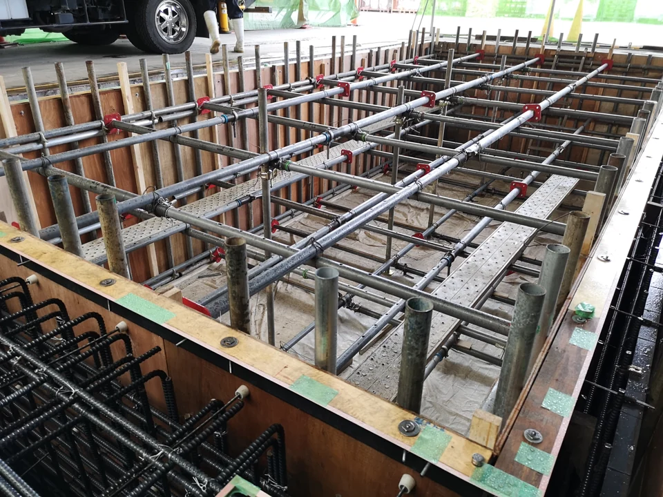
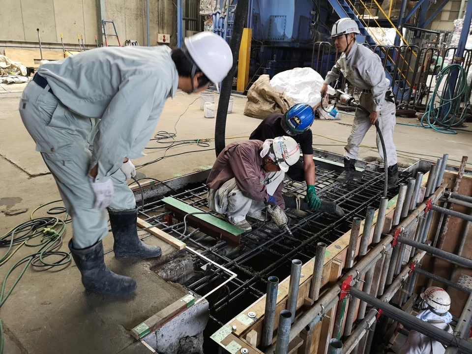
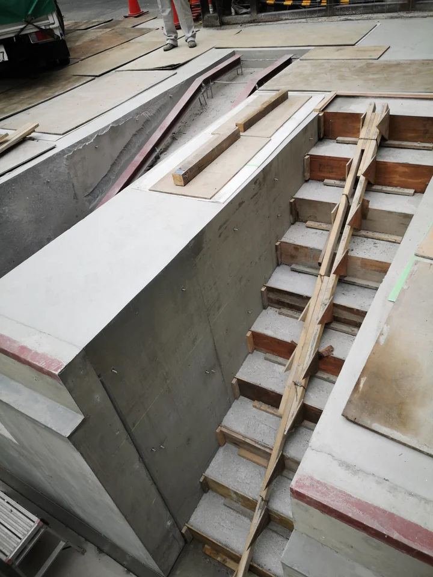

鋼矢板による地下水対策
江戸川区の現場で地下ピットを築造するにあたり、浅い掘削でも地下水が出る現場条件への対応として鋼矢板（シートパイル）による止水対策を行いました。太刀川組は元請として工事を受注し、鋼矢板の打設は下請業者が施工しました。写真には鋼矢板、施工機械、クレーンなどが写っています。

CONSTRUCTION RECORD / 土工事・鋼矢板
同じ現場で行った鋼矢板（シートパイル）による地下水対策、地下ピットの型枠・補強とコンクリート打設、階段の型枠とコンクリート施工を一つの施工記録として紹介します。鋼矢板工事は太刀川組が元請となり、実作業は下請業者が担当しました。地下ピットと階段の工事は当社が自社施工しました。
江戸川区の現場で地下ピットを築造するにあたり、浅い掘削でも地下水が出る現場条件への対応として鋼矢板（シートパイル）による止水対策を行いました。太刀川組は元請として工事を受注し、鋼矢板の打設は下請業者が施工しました。写真には鋼矢板、施工機械、クレーンなどが写っています。
地下ピットの型枠と補強を当社で施工しました。

地下ピットのコンクリート打設を当社で施工しました。

同じ現場で、階段の型枠とコンクリート施工も当社が担当しました。

工事の対象箇所、目的、施工条件、必要な許可区分、他業者との分担などを伺い、対応できる範囲を個別に検討します。このページには、未確認の工期・数量・性能・費用などの数値は掲載していません。
写真に近い工事や部分的な施工でも、対象と工事内容が分かる範囲でご相談ください。
工事について相談する →